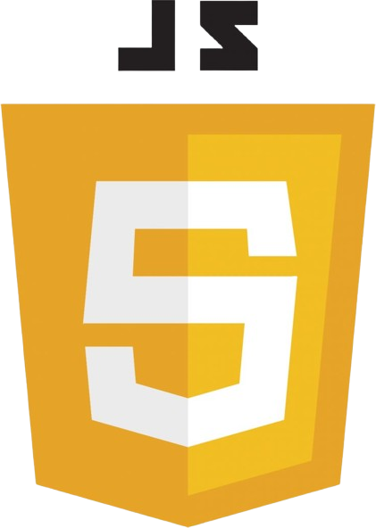
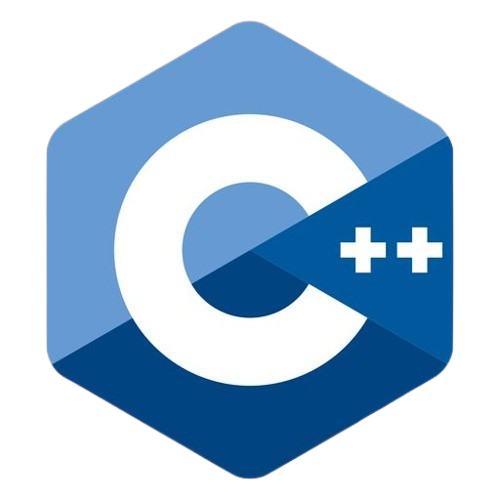
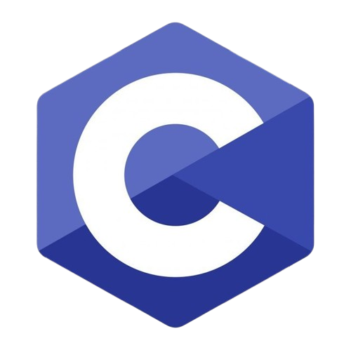
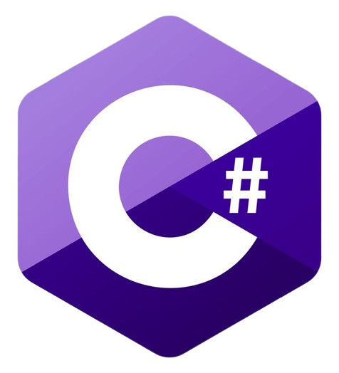

About me
My name is Alessandra M. Tabangcura, but you can call me Andi. I am 20 years old and
I live in Quezon City. I am currently a second-year college student, pursuing a Diploma
in Information Technology.
As an IT student, I have basic knowledge of technology and programming. I’m passionate
about learning new things and improving my skills. I enjoy working on small projects and
finding creative solutions to problems.
I am excited about my journey in the IT field and look forward to growing as a student
and professional, with hopes of specializing in software development.
My skills
I have basic knowledge of programming languages, including Java, C#, C++, and C. Recently,
I started learning HTML, CSS and JavaScript for building websites. I want to learn more and improve my
skills, and I am always looking for new opportunities to work with different technologies.
Web Development

HTML

CSS

JavaScript
Programming Languages
Java

C++

C

C#